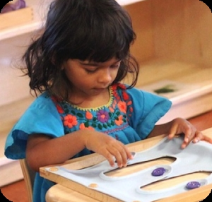
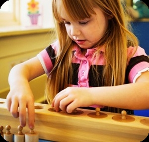
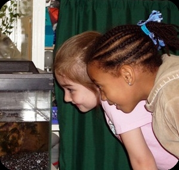
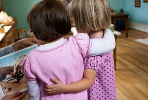

Montessori is a method of education that is based on self-directed activity, hands-on learning and collaborative play. In Montessori classrooms children make creative choices in their learning, while the classroom and the highly trained teacher offer age-appropriate activities to guide the process. Children work in groups and individually to discover and explore knowledge of the world and to develop their maximum potential.
Montessori classrooms are beautifully crafted environments designed to meet the needs of children in a specific age range. Dr. Maria Montessori discovered that experiential learning in this type of classroom led to a deeper understanding of language, mathematics, science, music, social interactions and much more. Most Montessori classrooms are secular in nature, although the Montessori educational method can be integrated successfully into a faith-based program.
Every material in a Montessori classroom supports an aspect of child development, creating a match between the child's natural interests and the available activities. Children can learn through their own experience and at their own pace. They can respond at any moment to the natural curiosities that exist in all humans and build a solid foundation for life-long learning.
The Association Montessori Internationale (AMI) was established by Maria Montessori in 1929 to protect the integrity of her work and to support high standards for both teacher training and schools. Today, AMI continues to uphold Maria Montessori's vision while collaborating with contemporary research in neuroscience and child development. Montessori Northwest is proud to be an official teacher training center of AMI, training teachers to work with children from birth to age twelve.
Montessori environments support the learning of children from birth to middle school:
For children ages birth to three years
For children ages three to six years
for children ages six to twelve years
Dr. Maria Montessori (1870-1952) was an Italian physician and anthropologist who devoted her life to understanding how children develop socially, intellectually, physically, and spiritually. By carefully observing children all over the world, she discovered universal patterns of development which are found in all children regardless of their culture or the era in which they live.
Dr. Montessori was one of the first women to be granted a diploma as a physician in Italy. Following her interest in human development, she assisted at a clinic for children with mental illnesses. She later directed the Orthophrenic School in Rome for children with physical, mental and emotional challenges. During this time Dr. Montessori lectured throughout Europe concerning the needs of children and their value to the future of our societies. She stressed the need to change our attitudes about children and their treatment.
In 1907, Dr. Montessori was given the responsibility of caring for a group of children in the Rome's San Lorenzo slum district. She began to see the importance of a positive, nurturing environment that changes with the developmental needs of the child. As she observed the children and their response to the environment, she saw them demonstrate capabilities and interests that exceeded her expectations. The set of materials used in the "Montessori" environment were designed over a period of many years by Dr. Maria Montessori and her associates, creating a concrete, physical representation of the concepts and skills that children are naturally motivated to learn in their normal course of development.
Dr. Montessori conducted her first international training course in Italy in 1913, and her first American training course in California in 1915. As she carried her vision around the world, she felt that a time had come to ensure the quality and integrity of what was being handed down in her training courses. For that reason, she founded the Association Montessori Internationale (AMI) in 1929. Today AMI continues to support quality teacher training worldwide.
Maria Montessori was a visionary, not easily daunted by the many challenges she faced during her career. She traveled extensively, lecturing and teaching throughout Europe, India and in the United States. She was recognized for her efforts by educators, psychologists and political leaders of the day. Her associates included such people as Anna Freud, Erik Erikson, Mahatma Gandhi, Alexander Graham Bell and Jean Piaget.
Dr. Montessori was nominated for the Nobel Peace Prize in 1949, 1950 and 1951 and continued working, teaching and writing up to the time of her death. Over the past one hundred years children throughout the world have benefited from this educational approach that supports, nurtures, and protects natural development. Maria Montessori's legacy lives on in the children whose lives are touched by her discoveries about life.
In her own words:
"My vision of the future is no longer of people taking exams and proceeding on that certification... but
of
individuals passing from one stage of independence to a higher, by means of their own activity, through
their
own effort of will, which constitutes the inner evolution of the individual." - Introduction, From
Childhood
to
Adolescence, Clio
“… The children themselves found a sentence that expressed this inner need. “Help me to do it by
myself!”
How
eloquent is this paradoxical request! …It is in this that our conception differs both from that of the
world
in
which the adult does everything for the child and from that of a passive environment in which the adult
abandons
the child to himself” - The Secret of Childhood, p. 213
“I have served the spirits of those children, and they have fulfilled their development, and I kept them
company
in their experiences” - Absorbent Mind p. 284
They contain many places for children to learn and play, in many different ways: by themselves, in pairs, in small groups, in large groups, inside, outside, at tables, on the floor. All items in the environment are scaled to the child's size, including furniture, shelves, utensils, dishware, cleaning implements and the Montessori materials themselves. There is no focal center to the classroom; this reflects that the teacher is not the focus of the children's attention, but that they are all one community together. Bright and attractive colors, natural materials, fascinating cultural objects and interesting pictures on the wall all offer the children complex sensory and intellectual experiences. When children first enter a Montessori environment, there is an immediate and touching moment when they realize that this place is for them.
In Montessori classrooms, children are taught how to regulate their own social interactions. Through fun role-playing activities and appropriate modeling, the teacher demonstrates the best way to respond to arguments or new situations, giving the child the ability to act confidently and pro-socially when the actual problem arises. The result is a self-regulating classroom, in which natural social tensions are resolved mostly by the children themselves.
Children move freely throughout the environment, choosing activities that interest them, or working with the teacher, individually, or in small groups. Their movement is unrestricted by the teacher unless it endangers themselves, other people, or their surroundings. Outdoor environments are important in Montessori schools, and offer opportunities to engage with the natural world.
Maria Montessori profoundly respected children and the developmental powers that drive them to seek certain experiences. Montessori education reframes the adult/child relationship to place the child at the center of his own learning. In Montessori classrooms, teachers respect children as separate and unique individuals. They guide children to respect the people and objects in their environment, and as the child grows older, to respect and understand the connectedness between all living and non-living things, leading to the adolescent's profound awareness of the complex web of human existence.
Children's needs change as they move through stages of development. At each level of Montessori education, this difference is honored through the preparation of the classroom environment. The environment is prepared in every way for optimal development: physically, cognitively, socially and emotionally. By aligning the activities in the environment with what each child needs at any moment, Montessori prepared environments liberate children's energy for growth and learning.
Montessori classrooms are interactive environments in which hands-on exploration is not only encouraged, it is necessary. By using the mind, the body, and the senses, learning becomes an activity that engages the whole self. Any parent will agree that children do; Montessori environments follow this natural inclination of children towards activity by offering an appropriate variety of objects and activities for meaningful engagement.
One of the most profound differences between Montessori education and conventional education is that, in Montessori, children are given the experience of discovering the answer for themselves. This leads to a much deeper learning experience, and creates a lifelong love of learning as a self-directed process of problem-solving and discovery.
Montessori classrooms support the development of imagination and creativity at every stage of learning. The open-ended activities allow children to explore new ideas and relationships, providing a foundation for self-expression and innovation. In the early years, the building blocks of imagination are firmly established through sensory exploration of the world, launching both imagination and creative self-expression.
Maria Montessori recognized that when allowed freedom of choice within clear, firm and reasonable boundaries, children act in positive ways that further their development. Freedom is frequently misunderstood, and many people take it to mean that children can do whatever they want. Montessori believed that freedom without boundaries was abandonment. In Montessori classrooms, expectations are clear, and children experience the natural and logical consequences of their choices. This freedom within limits allows for the natural development of self-regulation within the society of the classroom, as well as mirroring behaviors expected by society in general.
From the moment of birth onwards, humans strive towards independence. Children feel this need very strongly; they want to do things for themselves, and to participate in the world around them. In Montessori classrooms, this natural drive towards independence is fostered through practical, social and intellectual experiences. The child becomes an active agent in her own education, saying, “Help me to do it myself”. We honor this by helping children move to increasingly higher levels of independence and self-reliance.
School should offer children more than just academic skills. It should help them grow into confident, independent, caring and self-motivated people. The goal of Montessori education is to develop the whole person; someone who is more than the sum of their test scores. Equally important to the Montessori experience is the growth of the child's character. Montessori teachers strive to engender in the child a sense of responsibility and the connectedness of people and things. Children learn that their choices have consequences, not only in their immediate interpersonal relationships, but also in the world at large. By allowing safe consequences to flow freely from the child's choice, he learns to exert control over himself to limit negative results and promote positive ones. This development of executive function, most particularly self-regulation, is at the core of the child's drive towards confidence and independence.
Encouraging your child to make choices at an early age is one of the most powerful gifts a parent can offer. Giving choices fosters independence, cooperation and experience with natural consequences. This can be done in many ways. For a very young child, it can be as simple as, “Would you like to wear the blue shirt or the red shirt today?” This technique of offering choices can be extended into all parts of the child's life, growing in relation to her abilities, and leading to development of executive function and self-regulation.